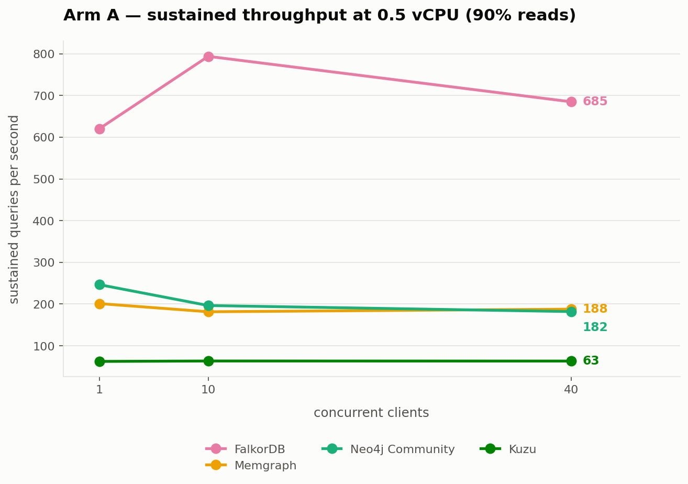
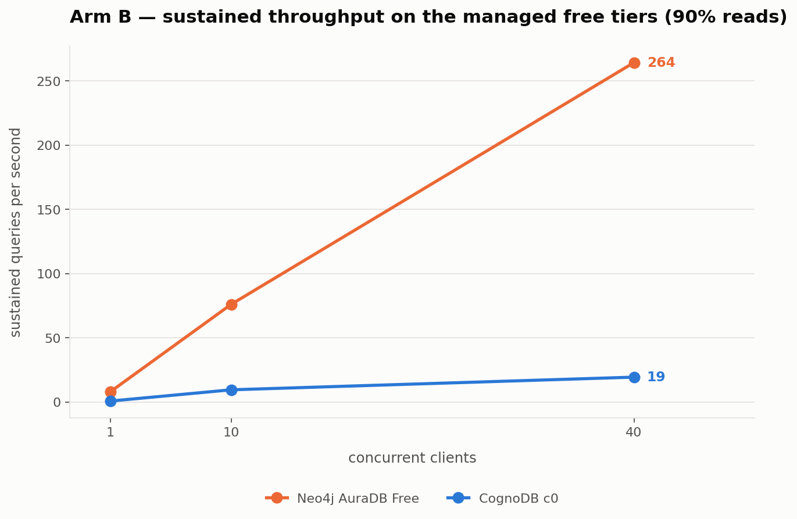
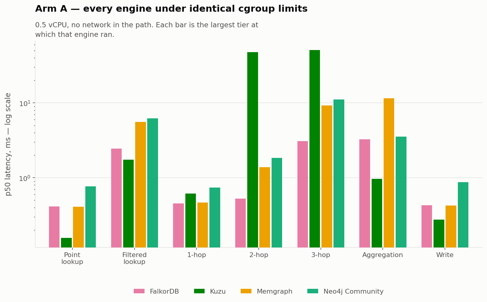
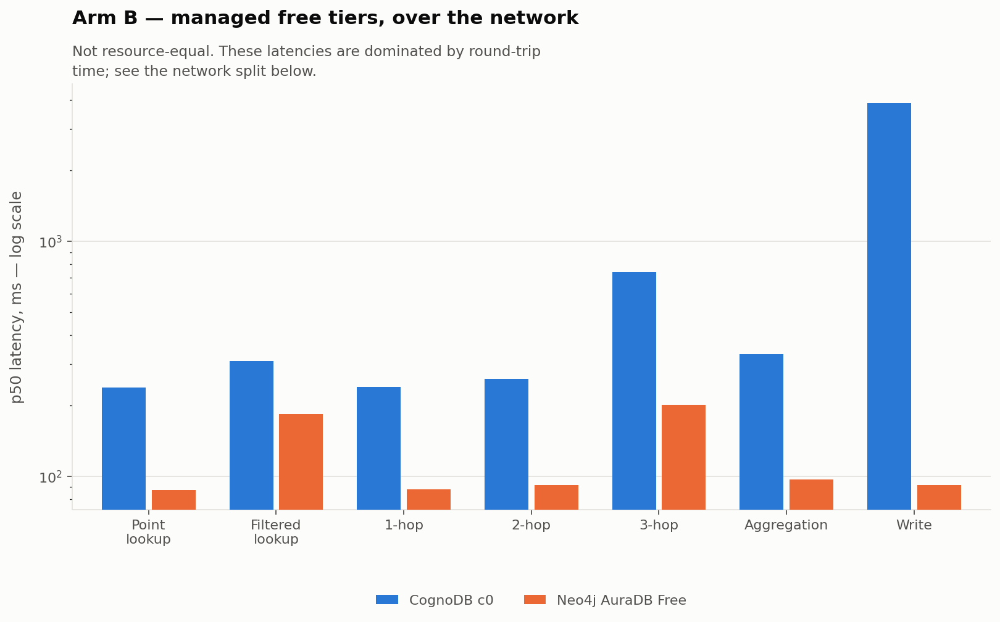
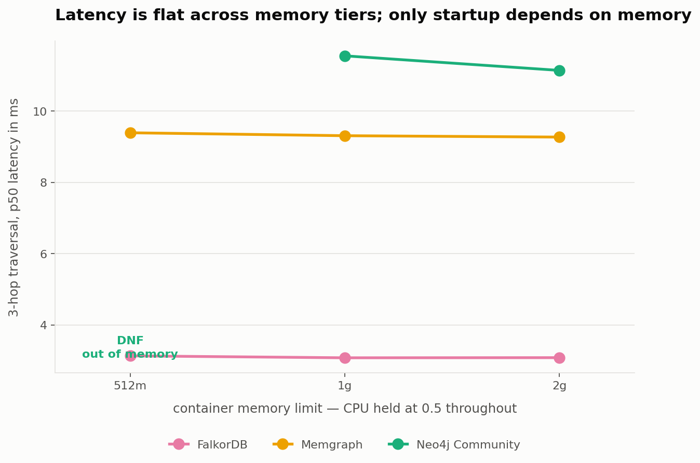
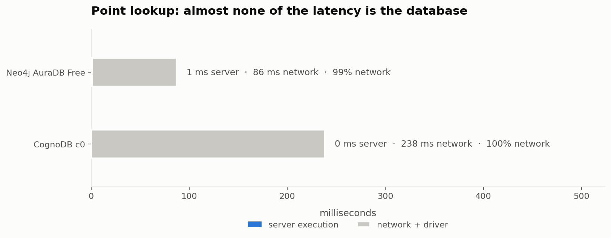
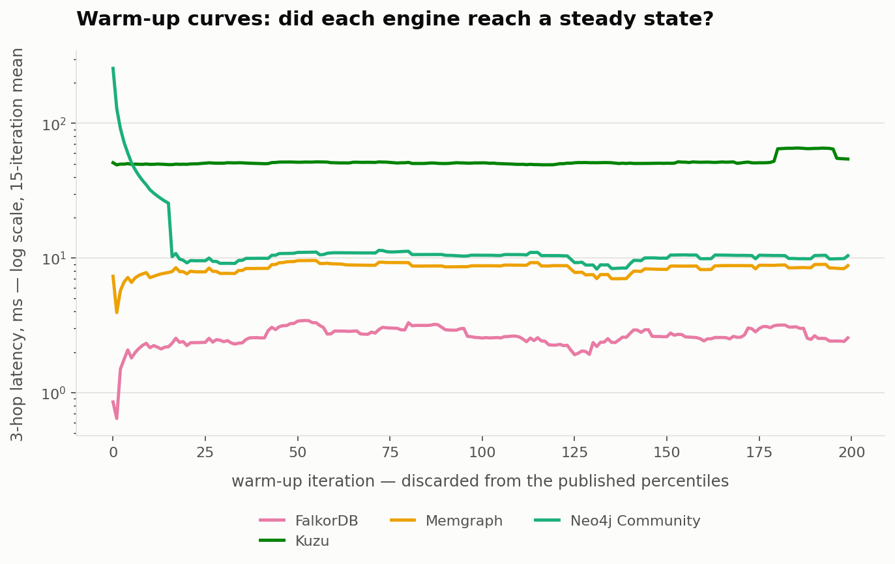

CognoDB Cloud's free tier is the subject of this study and the yardstick for its design. Its advertised specification — 0.5 vCPU, 512 MB RAM, 1 GiB disk — is the resource envelope every other engine is held to. Every figure below is generated from raw per-iteration data; none is typed by hand.
Driver batching at an identical batch size on every target. Each engine's faster native loader was deliberately not used: the managed targets have no equivalent, so a column mixing four mechanisms would compare nothing.
| Target | Relationships/s | Nodes/s | Wall clock |
|---|---|---|---|
| falkordb @ 2g | 84,979 | 35,913 | 4 s |
| falkordb @ 1g | 83,181 | 35,153 | 5 s |
| falkordb @ 512m | 80,903 | 34,191 | 5 s |
| neo4j-community @ 1g | 8,321 | 3,516 | 46 s |
| neo4j-community @ 2g | 7,269 | 3,072 | 52 s |
| neo4j-aura-free | 4,194 | 1,773 | 91 s |
| memgraph @ 2g | 2,686 | 1,135 | 142 s |
| memgraph @ 1g | 2,535 | 1,071 | 151 s |
| memgraph @ 512m | 2,502 | 1,057 | 152 s |
| cognodb-c0 | 1,999 | 845 | 191 s |
| kuzu | 318 | 134 | 1,201 s |
| neo4j-community @ 512m | DNF — out of memory | ||
Every engine in a container capped at CognoDB c0's advertised specification, with
no network in the path. p50 in milliseconds. The enforced cpu.max and
memory.max were read from inside each running container and recorded.
| Target | Point lookup | Filtered lookup (indexed) | 1-hop traversal | 2-hop traversal | 3-hop traversal | Aggregation (group-by) | Write (indexed update) |
|---|---|---|---|---|---|---|---|
| falkordb @ 1g | 0.43 | 2.46 | 0.44 | 0.50 | 3.08 | 3.29 | 0.44 |
| falkordb @ 2g | 0.41 | 2.46 | 0.45 | 0.53 | 3.08 | 3.25 | 0.43 |
| falkordb @ 512m | 0.43 | 2.51 | 0.45 | 0.54 | 3.13 | 3.30 | 0.43 |
| kuzu | 0.16 | 1.74 | 0.62 | 47.66 | 50.74 | 0.97 | 0.28 |
| memgraph @ 1g | 0.40 | 5.62 | 0.46 | 1.41 | 9.31 | 11.87 | 0.42 |
| memgraph @ 2g | 0.41 | 5.55 | 0.47 | 1.39 | 9.27 | 11.53 | 0.42 |
| memgraph @ 512m | 0.40 | 5.73 | 0.48 | 1.50 | 9.39 | 11.76 | 0.43 |
| neo4j-community @ 1g | 0.83 | 11.36 | 0.81 | 2.13 | 11.55 | 3.70 | 0.78 |
| neo4j-community @ 2g | 0.77 | 6.23 | 0.74 | 1.84 | 11.14 | 3.53 | 0.87 |
| neo4j-community @ 512m | DNF | DNF | DNF | DNF | DNF | DNF | DNF |
Explicitly not resource-equal, and network is in the path. These figures are dominated by round-trip time and should be read alongside the server-execution split below.
| Target | Point lookup | Filtered lookup (indexed) | 1-hop traversal | 2-hop traversal | 3-hop traversal | Aggregation (group-by) | Write (indexed update) |
|---|---|---|---|---|---|---|---|
| cognodb-c0 | 238.26 | 310.03 | 240.40 | 259.91 | 739.18 | 331.27 | 3,871.26 |
| neo4j-aura-free | 87.28 | 184.61 | 87.84 | 91.68 | 201.64 | 97.08 | 91.91 |
CognoDB reported 0.0 ms of server-side execution on all seven workloads, including the three-hop traversal returning 1,000 rows. Bolt reports server time in whole milliseconds, so this is an upper bound of under 1 ms rather than a precise figure — but nothing in this study established an upper bound on its read speed, because nothing it was asked to do took long enough to measure.
The containerised arm was executed three times. A difference between two engines smaller than either one's own spread is not a difference. Measurements marked ⚠ exceed a coefficient of variation of 0.10 and should not be compared across engines without accounting for the spread. Least stable first.
| Target | Metric | Median | Min | Max | Spread | CV |
|---|---|---|---|---|---|---|
| neo4j-community @ 1g | filtered_lookup p50 ms | 6.33 | 6.10 | 11.36 | 83.1% | 0.375 ⚠ |
| memgraph @ 512m | 40-client q/s | 149.73 | 147.47 | 183.07 | 23.8% | 0.125 ⚠ |
| falkordb @ 1g | ingest rels/s | 83,180.98 | 69,428.65 | 83,463.45 | 16.9% | 0.102 ⚠ |
| memgraph @ 1g | 40-client q/s | 181.93 | 158.23 | 190.23 | 17.6% | 0.094 |
| neo4j-community @ 1g | hop1 p50 ms | 0.81 | 0.75 | 0.86 | 14.7% | 0.074 |
| neo4j-community @ 2g | ingest rels/s | 8,121.32 | 7,268.58 | 8,323.48 | 13.0% | 0.071 |
| memgraph @ 512m | point_lookup p50 ms | 0.40 | 0.37 | 0.42 | 13.0% | 0.066 |
| neo4j-community @ 2g | write_tag p50 ms | 0.79 | 0.78 | 0.87 | 11.7% | 0.063 |
| falkordb @ 1g | point_lookup p50 ms | 0.39 | 0.38 | 0.43 | 11.7% | 0.061 |
| falkordb @ 512m | 40-client q/s | 714.87 | 667.17 | 747.63 | 11.3% | 0.057 |
| memgraph @ 2g | 40-client q/s | 187.77 | 171.20 | 190.43 | 10.2% | 0.057 |
| neo4j-community @ 1g | hop2 p50 ms | 2.00 | 1.90 | 2.13 | 11.4% | 0.057 |
| neo4j-community @ 1g | 1-client q/s | 241.57 | 233.63 | 260.63 | 11.2% | 0.057 |
| neo4j-community @ 1g | point_lookup p50 ms | 0.83 | 0.78 | 0.87 | 10.8% | 0.054 |
| falkordb @ 2g | 40-client q/s | 684.83 | 651.37 | 722.77 | 10.4% | 0.052 |
| memgraph @ 512m | hop2 p50 ms | 1.38 | 1.37 | 1.50 | 9.7% | 0.051 |
| memgraph @ 2g | write_tag p50 ms | 0.42 | 0.42 | 0.46 | 8.7% | 0.046 |
| memgraph @ 2g | 10-client q/s | 179.97 | 167.83 | 181.50 | 7.6% | 0.042 |
| memgraph @ 2g | point_lookup p50 ms | 0.41 | 0.38 | 0.41 | 7.3% | 0.041 |
| memgraph @ 1g | hop2 p50 ms | 1.41 | 1.38 | 1.49 | 7.9% | 0.041 |
One claim did not survive. A single run showed Neo4j's server-side aggregation at 2.00 ms against FalkorDB's 2.68 ms, and an earlier draft stated that Neo4j won it. Across three runs Neo4j measured 2.00, 2.00 and 3.00 ms against FalkorDB's 2.68, 2.75 and 2.69 — overlapping ranges, with Neo4j slower than FalkorDB's worst in one run. The measurement cannot separate them. The retraction is left visible in the repository rather than deleted.
Rendered from the same raw output as the tables. A did-not-finish is drawn as a labelled gap, never as a zero.







Of seven managed graph platforms surveyed, two still offer a free tier that survives a week, and those span 100 MB to 4 GB. Equal resources across managed free tiers is therefore not achievable. Arm A imposes CognoDB c0's envelope on every other engine via cgroups; Arm B measures the managed tiers as shipped. The two are reported separately and never averaged.
Bolt returns server-side execution time independently of what the client observed, and a
warmed round-trip floor bounds each target. A RETURN 1 against CognoDB costs
238 ms client-side and 0 ms server-side.
A distribution-free confidence interval for p95 is unbounded below n = 110, so the commonly suggested 100 iterations yields a p95 with no error bar. The latency client is closed-loop, which distorts p99 by 20× or worse, so no p99 is published from it.
Neo4j is OOM-killed at 512 MB and that is published as a DNF with its exit code, not omitted. Row counts are compared across targets on every workload — a check that caught four real defects, including one genuine semantic divergence between two Cypher engines, none of which was visible from latency alone.